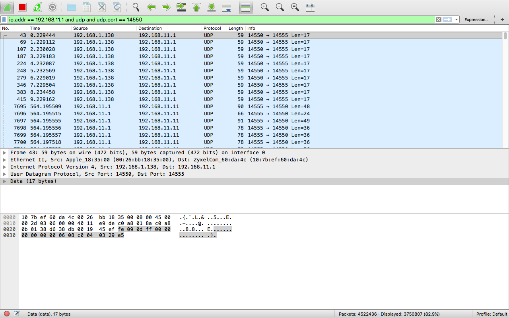

Заметка по работе с Bash
У меня накопилось достаточно большое количество переодически гуглящихся вещей, которые хочу структурировать в этой заметке. Заметка будет обновлена.
Bash
перенаправления и pipe
| - передача аргумента
> – передача вывода команды в новый файл или перезапись существующего файла
>> - передача вывода команды в новый файл или дозапись с конца
Стандартный вывод команды происходит с числом 1, вывод ошибок с числом 2. Выводы перенаправлять в разные файлы отдельно.
2>&1 – перенаправляет вывод ошибки на стандартный вывод, поэтому они появляются вместе и могут быть совместно перенаправлены в файл.
2>1 – перенаправит вывод ошибки в файл с именем 1, а не в стандартный вывод 1.
Источники:
Параллельно исполнение в Bash
Источники:
Полезные ссылки
- Изменение значения окружения указывающей на разделение списка f-notes.info/linux:bash_lists
- Хороший справочник по встроенным командам bash losst.ru/osnovnye-komandy-bash
- bash awk habr.ru/company/ruvds/blog/327754/
- bash uniq (удаление повторов строк) linux.org.ru/forum/general/7476629
- разница return and exit stackoverflow
- Вывод echo \r losst.ru/komanda-echo-v-linux
Отладка программ
- strace - системные вызовы
- ltrace - трейсить вызовы из SO
- ldd - посмотреть зависимые библиотеки
Посмотреть какому пакету принадлежит файл
sudo dpkg -S FILE
Посмотреть какие файлы принадлежат пакету
sudo dpkg -L ros-kinetic-catkin
Проверка версии Debian
lsb_release -a
Копирование с exclude
rsync -av --progress * --exclude sakis_install.sh
sudo cp -r * -i sakis_install.sh
Поиск
- Поиск по содержимому grep losst.ru/gerp-poisk-vnutri-fajlov-v-linux
- Поиск по файлам find losst.ru/komanda-find-v-linux
Дебиан просто так не завелся
Добавление прав для выполнения sudo:
usermod -a -G sudo artem
Установление норм репы в/etc/apt/sources.list
Мощное удаление всего что можно APT
sudo apt-get remove lxde-common lxde-icon-theme omxplayer x11-common midori lxde python3 python3-minimal
sudo apt-get remove $(sudo dpkg --get-selections | grep -v "deinstall" | grep x11 | sed s/install//)
sudo apt-get remove $(sudo dpkg --get-selections | grep -v "deinstall" | grep audio | sed s/install//)
sudo apt-get autoremove
Откат ПО APT
system-admins.ru/kak-otkatit-obnovleniya-na-debian-ubuntu-linux-v-sluchae-problem/
настройка сети ubuntu server
- https://losst.ru/nastrojka-seti-iz-konsoli-ubuntu
- https://theintobooks.wordpress.com/2016/03/03/installing-qemu-on-mac-os-x-el-capitan/
очистить history
cat /dev/null > ~/.bash_history && history -c && exit
screen in chroot (getty tty)
unconfigure
virt-sysprep virt-configure
Название вкладки
Работа с логами
-
выборка
grep 'Aug 8 16:' aug8_daemon.log > aug8_16hour_daemon.log -
работа с grep admins.su/grep-nezamenimyj-instrument-linuksoida/
Logrotate in ROS
- answers.ros.org/question/267503/log-rotation-in-ros/
- github.com/mikepurvis/ros-system-daemon/blob/master/debian/ros-system-daemon.ros.logrotate
- askubuntu.com/questions/847790/why-is-logrotate-not-running-automatically
- www.opennet.ru/base/sys/logrotate_howto.txt.html
- stackoverflow.com/questions/25485047/hourly-rotation-of-files-using-logrotate
ROS: Переполнение логов
Стандартная утилита для мониторинга и чистки http://wiki.ros.org/rosclean https://answers.ros.org/question/258978/is-there-an-alternative-way-to-get-rid-of-ros-log-files/


Переполнение логов 20 метров (то, что я сохранил) .ros/log/cecd58fa-972b-11e7-ad41-3974d4b0fb26
Скрипт очистки логов, если накопилось более 300MB
if [[ $(du -s .ros | awk '{ print $1 }') -ge 300000 ]]; then yes | rosclean purge; echo "urpylka: cleaned ros log"; fi
Работа с файловой системой
- Parted (аля fdisk) wiki.dieg.info/parted
- форматирование с parted losst.ru/formatirovanie-diska-v-linux
- Удаление разделов с исп. parted stableit.ru/2010/09/blog-post_06
Какой-то бред с использование mount, dd. Обратить внимание на status=WHICH.
sudo mount /dev/sda1 /home/pi/flash
sudo dd status=WHICH if=/dev/sdb of=flash/urpylka_network.img bs=100M
sudo dd status=progress if=/dev/mmcblk0 of=<filename>.img bs=100M
sudo dd status=progress if=/dev/sdb of=/home/pi/flash/urpylka_network.img bs=100M
sudo dd if=/dev/sdc of=image_builder_20180515_v2_1.img bs=1M count=3065 status=progress
Форматирование флешки в какую-то файловую систему:
mkfs [options] [-t <type>] [fs-options] <device> [<size>]
Резервирование места на диске
sudo tune2fs -m1 /dev/mmcblk0p2
macOS
Удаление любых программ на macos
mkdir /Applications/*.app/Contents/_MASReceipt && sudo touch /Applications/*.app/Contents/_MASReceipt/receipt
support.apple.com/en-us/HT204899
Sounds like it could be System Integrity Protection? Make sure it’s disabled before you mess around with system files.
To disable it, restart in recovery mode (hold ⌘+R), open Terminal, and use this command:
csrutil disable
Установка гостевой штуки для VirtualBox
/Applications/VirtualBox.app/Contents/MacOS/VBoxGuestAdditions.iso
sudo apt-get install dkms build-essential
Настройка гостевой штуки serverfault.com/questions/674974/how-to-mount-a-virtualbox-shared-folder/674978
sudo mount -t vboxsf share moint_poin
Update Coda License
sudo rm ~/Library/Preferences/com.panic.Coda2.plist
Cron on macOS ole.michelsen.dk/blog/schedule-jobs-with-crontab-on-mac-osx.html
crontab -l
0 12 * * * rm /Users/smirart/Library/Preferences/com.panic.Coda2.plist
Смена TTL на macOS
sudo sysctl -w net.inet.ip.ttl=65
Скрипт для создания скрипта)))
echo "#! /bin/bash"
>
ch_ttl.sh
echo "sudo sysctl -w net.inet.ip.ttl=65"
>
>
ch_ttl.sh
chmod +x ch_ttl.sh
Resize volume on macos
- apple.stackexchange.com/questions/197640/diskutil-resizevolume-noob
- www.macworld.com/article/1055274/software-utilities/marchgeekfactor.html
losetup macos
hdiutil attach build_server_backup.img
ctrld.me/blog/2009/10/03/rabotaem-s-obrazami-diskov-v-terminal-app-hdiutil/
Монитрование файловых систем ext2, ext3, ext4
Cкрин окна с тенью на macOS
cmd+shift+4+space
на маке что исправлено
- сочетание клавишь для заметок на com+T для создания новой
- Настроить терминал: перемещение словами, перемещение в начало и конец строки
- Ctrl + k удаление строки в nano
- Поиск по истории bck-i-search (типа ctrl+i)
Использования мака в качестве монитора
support.apple.com/en-us/ht204592
Wireshark
мониторинг пакетов с помощью wireshark tcpdump

ip.addr == 192.168.11.1 and udp and udp.port == 14550
VSCODE
CMD + / - комментирование
Неразрывные символы
- неразрыный дефис «‑»
- неразрывный пробел. Неразрывные пробелы есть разной длины, « » – стандартный. Другие можно найти по ссылке.